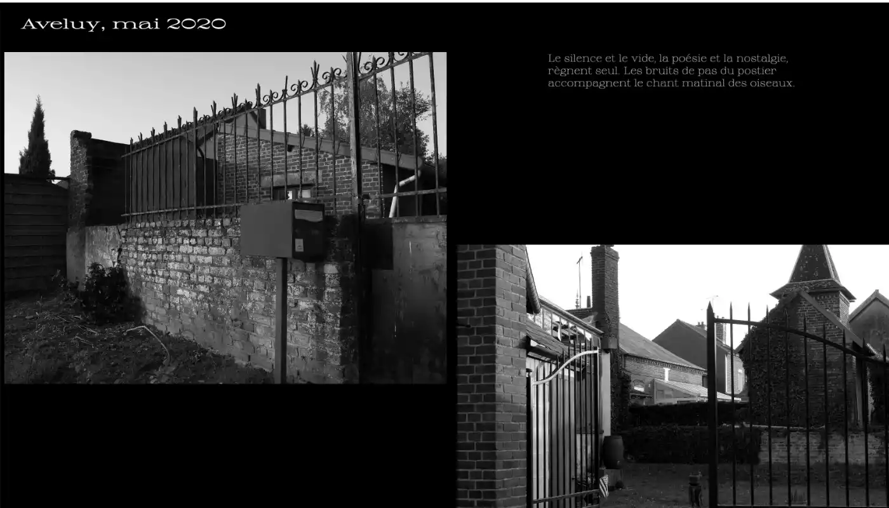
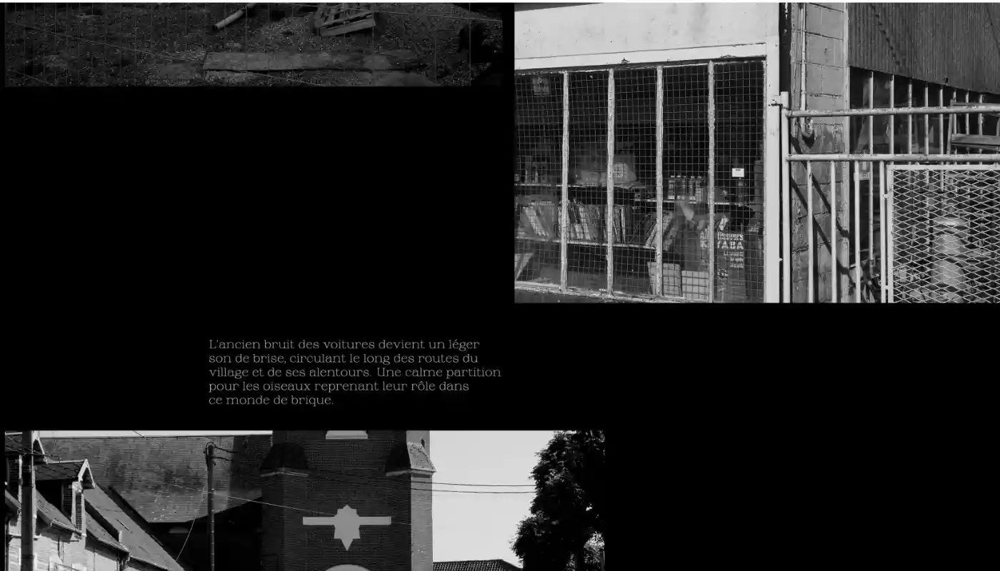
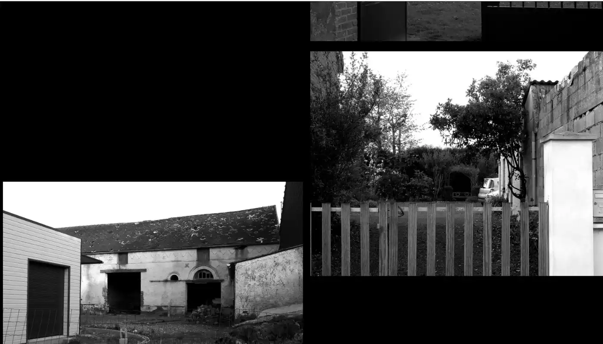
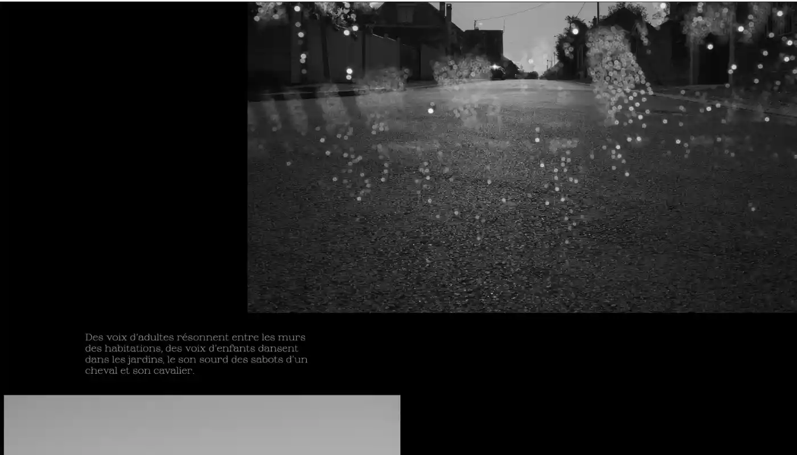
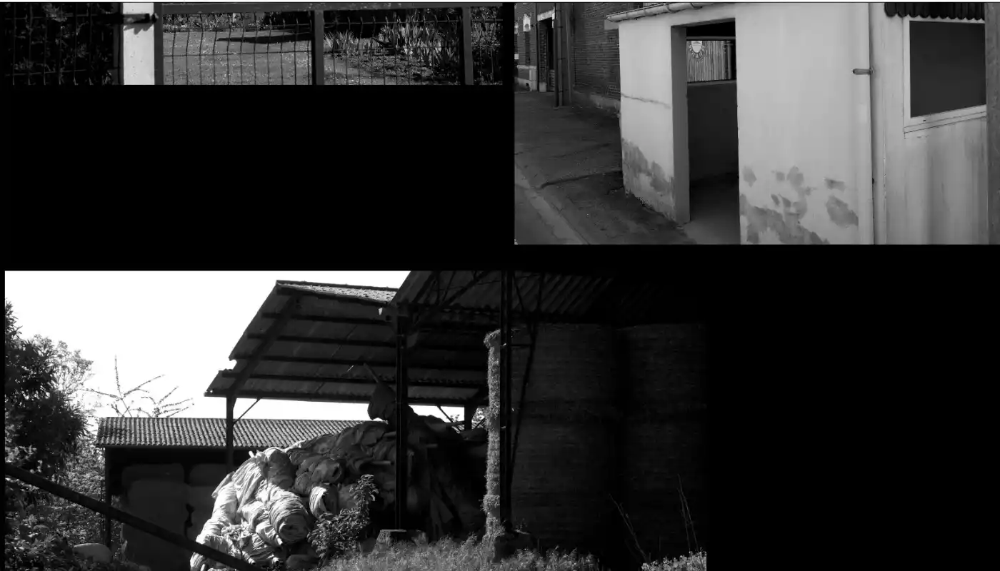
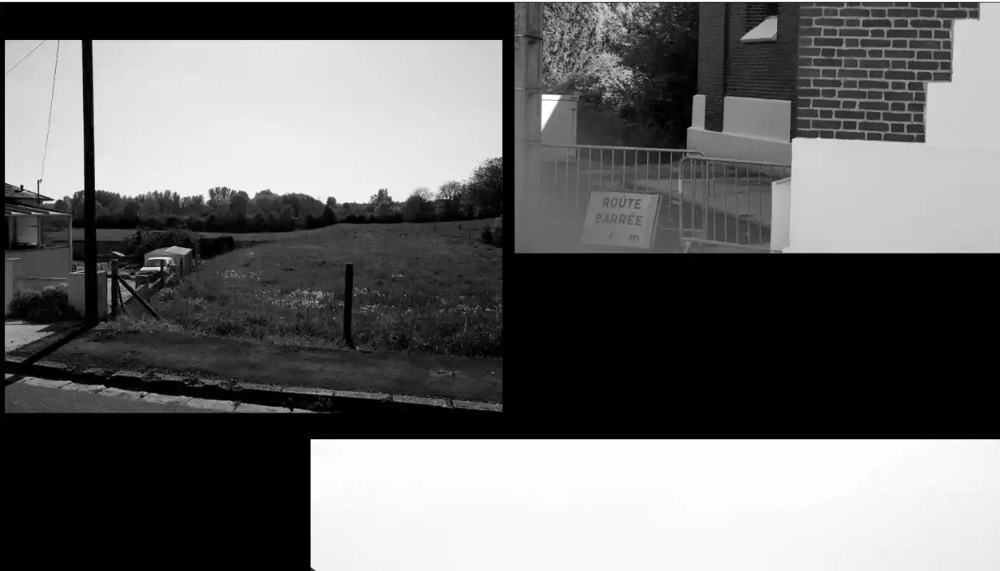

AVELUY, MAI 2020
Livre photo numérique
«Aveluy, mai 2020» est un sujet photo reprenant les codes du film noir pour construire une histoire autour des photos prises pendant le confinement de 2020. L’histoire se construit autour de l’architecture et d’une imagerie cinématographique hollywoodienne malgré un décor de campagne.
J’avais la volonté de faire un livre numérique, les photos s’articulant sur une page web. On peut donc voir et lire sans soucis de distance.
Pour voir le projet complet : Aveluy, mai 2020





